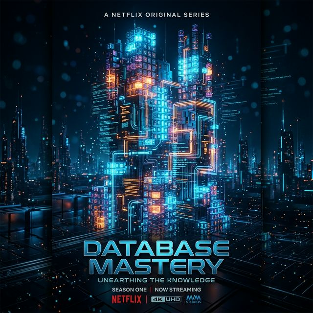

CS
+

Dados e Persistência (Databases)
Do SQL relacional às arquiteturas NoSQL distribuídas.
Temporada 1: Fundamentos de DB
SQL vs NoSQL
Normalization & ACID
DDL, DML, DQL e JDBC no Java
Temporada 2: Internos e Escalabilidade
Indexes, Views & Transactions
Sharding & Replication
CAP Theorem & PACELC